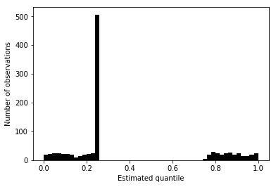
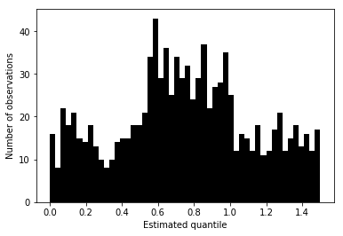
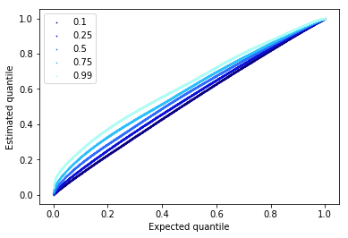
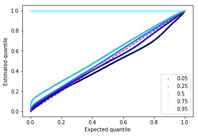
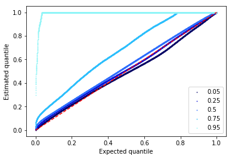
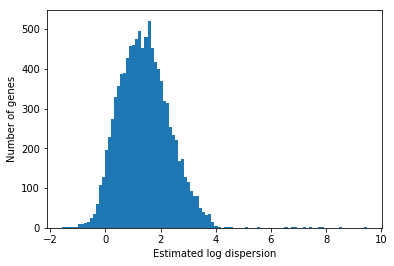
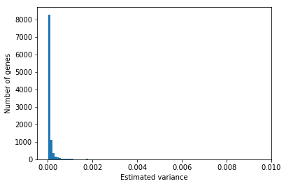
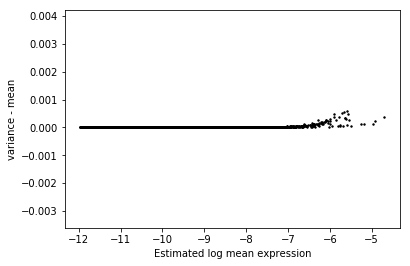

Mean/dispersion estimation
Introduction
We take a modular approach to call QTLs:
- Estimate a mean and a dispersion for each individual
- Treat the mean/dispersion as continuous phenotypes and perform QTL mapping
Here, we solve (1).
Model specification
Let \(r_{ijk}\) denote the number of molecules for individual \(i\), cell \(j\), gene \(k\). Let \(R_{ij}\) denote a size factor for each cell. As a first pass, define \(R_{ij} = \sum_k r_{ijk}\).
Following Hilbe 2012, we derive the negative binomial as a Poisson-Gamma mixture:
\[ r_{ijk} \sim \text{Pois}(R_{ij} \mu_{ik} u_{ijk}) \]
\[ u_{ijk} \sim \text{Gamma}(\phi_{ik}^{-1}, \phi_{ik}^{-1}) \]
Here, \(\mu_{ik}u_{ijk}\) denotes relative expression (Pachter 2011). Marginalizing out \(u\) yields the negative binomial distribution, with log likelihood:
\[ \ln p(r_{ijk} \mid R_{ij}, \mu_{ik}, \phi_{ik}) = r_{ijk} \ln\left(\frac{R_{ij}\mu_{ik}\phi_{ik}}{1 + R_{ij}\mu_{ik}\phi_{ik}}\right) - \phi_{ik}^{-1} \ln(1 + R_{ij}\mu_{ik}\phi_{ik}) + \ln \Gamma(r_{ijk} + \phi_{ik}^{-1}) - \ln \Gamma(r_{ijk} + 1) - \ln \Gamma(\phi^{-1}) \]
We have multiple data points (30-200 cells) per mean/dispersion parameter, so simply minimizing the negative log likelihood should give reasonable estimates.
We can additionally account for zero-inflation, by letting \(\pi_{\cdot}\) denote the probability of a "technical zero" (i.e., not arising from the negative-binomial).
As a first pass, estimate dropout assuming parameters \(\pi_k\) are shared across cells (and individuals) for each gene. This assumption allows us to directly estimate the parameter from the data without requiring shrinkage/regularization to avoid overfitting.
Then, the log-likelihood of the data is:
\[ \ln p(r_{ijk} \mid \cdot) = \ln(\pi_\cdot + (1 - \pi_{\cdot}) p(r_{ijk} \mid R_{ij}, \mu_{ik}, \phi_{ik}))\ \text{if}\ r_{ijk} = 0 \] \[ \ln p(r_{ijk} \mid \cdot) = \ln(1 - \pi_{\cdot}) + \ln p(r_{ijk} \mid R_{ij}, \mu_{ik}, \phi_{ik})\ \text{otherwise} \]
Tensorflow implementation
We optimize all of the parameters together, using one-hot encoding to map parameters to data points. This makes inference more amenable to running on the GPU.
Use tensorflow to automatically differentiate the negative log likelihood and
perform gradient descent.
def sigmoid(x): """Numerically safe sigmoid""" return tf.clip_by_value(tf.sigmoid(x), -13, 13) def log(x): """Numerically safe log""" return tf.log(x + 1e-8) def nb_llik(x, mean, inv_disp): """Log likelihood of x distributed as NB See Hilbe 2012, eq. 8.10 mean - mean (> 0) inv_disp - inverse dispersion (> 0) """ return (x * log(mean / inv_disp) - x * log(1 + mean / inv_disp) - inv_disp * log(1 + mean / inv_disp) + tf.lgamma(x + inv_disp) - tf.lgamma(inv_disp) - tf.lgamma(x + 1)) def zinb_llik(x, mean, inv_disp, logodds, eps=1e-8): """Log likelihood of x distributed as ZINB See Hilbe 2012, eq. 11.12, 11.13 mean - mean (> 0) inv_disp - inverse dispersion (> 0) logodds - dropout log odds """ case_zero = log(sigmoid(-logodds) + sigmoid(logodds) * tf.exp(nb_llik(x, mean, inv_disp))) case_non_zero = -tf.nn.softplus(logodds) + nb_llik(x, mean, inv_disp) return tf.where(tf.less(x, 1e-8), case_zero, case_non_zero) def fit(umi, onehot, size_factor, gene_dropout=False, ind_dropout=False, learning_rate=1e-2, max_epochs=1000): """Return estimated log mean and log dispersion. If fitting a zero-inflated model, additionally return dropout log odds. umi - count matrix (n x p; float32) onehot - mapping of individuals to cells (m x n; float32) size_factor - size factor vector (n x 1; float32) gene_dropout - fit one dropout parameter per gene ind_dropout - fit one dropout parameter per individual init_log_mean - initial value for estimated log mean (m x p; float32) init_log_disp - initial value for estimated log dispersion (m x p; float32) If ind_dropout is True, gene_dropout must be True, otherwise raises ArgumentError. Returns: log_mean - log mean parameter (m x p) log_disp - log dispersion parameter (m x p) dropout - dropout log odds (1 x p if gene_dropout, n x p if ind_dropout) """ n, p = umi.shape _, m = onehot.shape params = locals() graph = tf.Graph() with graph.as_default(), graph.device('/gpu:*'): size_factor = tf.Variable(size_factor, trainable=False) umi = tf.Variable(umi, trainable=False) onehot = tf.Variable(onehot, trainable=False) mean = tf.exp(tf.Variable(tf.zeros([m, p]))) inv_disp = tf.exp(tf.Variable(tf.zeros([m, p]))) if gene_dropout: if ind_dropout: dropout_params = tf.Variable(tf.zeros([m, p])) dropout = tf.matmul(onehot, dropout_params) else: dropout_params = tf.Variable(tf.zeros([1, p])) dropout = dropout_params llik = tf.reduce_mean( zinb_llik(umi, size_factor * tf.matmul(onehot, mean), tf.matmul(onehot, inv_disp), dropout)) elif ind_dropout: raise ValueError('Cannot specify individual-specific dropout without gene-specific dropout') else: llik = tf.reduce_mean( nb_llik(umi, size_factor * tf.matmul(onehot, mean), tf.matmul(onehot, inv_disp))) train = tf.train.AdamOptimizer(learning_rate=learning_rate).minimize(-llik) opt = [tf.log(mean), -tf.log(inv_disp)] if gene_dropout: opt.append(dropout_params) curr = float('-inf') with tf.Session() as sess: sess.run(tf.global_variables_initializer()) for i in range(max_epochs): _, update = sess.run([train, llik]) if not np.isfinite(update): raise tf.train.NanLossDuringTrainingError if not i % 100: print(i, update) return sess.run(opt)
Quantile-quantile diagnostic plot
The challenge in visualizing the fitted distributions is that the observations \(r_{ijk}\) are not drawn iid. from a distribution \(g_{ik}(\cdot)\).
Instead, we have \(r_{ijk} \sim g_{ijk}(\cdot)\), and we have used maximum likelihood to estimate distributions \(\hat{g}_{ijk}\).
We can use the probability integral transform to develop a diagnostic (as in
ashr): Let \(\hat{G}_{ijk}\) denote the CDF of \(\hat{g}_{ijk}\). Then, the
distribution of values \(\hat{G}_{ijk}(r_{ijk})\) should be uniform.
In the case of modeling dropout, the CDF is discontinuous due to the point mass on zero, which we can observe using a point-normal mixture:
\[ x \sim \pi \delta(x) + (1 - \pi) N(0, 1) \]
\[ \Pr(X < x) = \pi 1_{x > 0} + (1 - \pi) \Phi(x) \]
N = 1000 G = st.norm() observations = G.rvs(size=N) * (np.random.uniform(size=N) < 0.5) quantiles = .5 * (observations > 0) + .5 * G.cdf(observations)
plt.clf() plt.hist(quantiles, bins=50, color='k') plt.xlabel('Estimated quantile') _ = plt.ylabel('Number of observations')

In this case, we can instead compute a randomized quantile, which will be uniform in expectation.
rand_quantiles = G.cdf(observations) + np.random.uniform(size=N) * np.isclose(observations, 0)
plt.clf() plt.hist(rand_quantiles, color='k', bins=50) plt.xlabel('Estimated quantile') _ = plt.ylabel('Number of observations')

def estimated_cdf(x, mean, disp, size, onehot, gene_dropout=None, ind_dropout=None): n = onehot.dot(np.exp(-disp.values.T) + 1e-8) p = 1 / (1 + size.to_frame().values * onehot.dot(np.exp(mean.values + disp.values).T)) assert (n.values > 0).all() assert (p.values >= 0).all() assert (p.values <= 1).all() G = st.nbinom(n=n, p=p).cdf(x) if gene_dropout is not None: G *= sp.expit(-gene_dropout.values.T) G += sp.expit(gene_dropout.values.T) elif ind_dropout is not None: G *= onehot.dot(sp.expit(-ind_dropout.values.T)) G += onehot.dot(sp.expit(ind_dropout.values.T)) assert (G <= 1).all() return G def diagnostic(umi, mean, disp, size, onehot, **kwargs): q = estimated_cdf(umi.values.T, mean, disp, size, onehot, **kwargs) plt.clf() plt.scatter(x=np.linspace(0, 1, q.shape[0]), y=sorted(q.ravel()), s=0.5) plt.plot([[0, 0], [1, 1]], c='black') plt.title(umi.index[0]) plt.xlabel('Expected quantile') plt.ylabel('Estimated quantile')
Look at the quantiles of the QQ plots over all genes:
def diagnostic_quantiles(umi, mean, disp, size, onehot, quantiles=None, **kwargs): if quantiles is None: quantiles = np.array([.05, .25, .5, .75, .95]) else: quantiles = np.array(quantiles) assert (0 <= quantiles <= 1).all() cdf = np.sort(estimated_cdf(umi.values.T, mean, disp, size, onehot, **kwargs).T) cdf_quantiles = np.percentile(cdf, 100 * quantiles, interpolation='higher', axis=0) plt.clf() for q, row in zip(quantiles, cdf_quantiles): plt.scatter(x=np.linspace(0, 1, row.shape[0]), y=row, c=colorcet.cm['kbc'](q), s=.5, label=q) plt.plot([0, 1], [0, 1], c='r', ls='dashed') plt.legend() plt.xlabel('Expected quantile') plt.ylabel('Estimated quantile')
Read the data
Read the QC'ed data.
Onehot-encode the samples.
individuals = sorted(annotations['chip_id'].unique()) onehot = np.zeros((umi.shape[1], len(individuals)), dtype=np.float32) onehot[np.arange(onehot.shape[0]),annotations['chip_id'].apply(lambda x: individuals.index(x))] = 1 onehot = pd.DataFrame(onehot, columns=individuals, index=umi.columns) onehot.shape
(4995, 54)
Check that one-hot encoding is OK:
for _ in range(100): gene = np.random.choice(umi.index) ind = np.random.choice(individuals) idx = individuals.index(ind) assert (umi.loc[gene, (annotations['chip_id'] == ind).values] == umi.loc[gene, onehot.dot(np.eye(onehot.shape[1])[idx]).astype(bool)]).all()
Fit NB
Estimate means and dispersions assuming no dropout.
<<zinb-imports>> <<tf-imports>> <<zinb-impl>> <<read-data-qc>> <<onehot-qc>> mean, dispersion = fit( umi=umi.values.T.astype(np.float32), onehot=onehot.values.astype(np.float32), size_factor=umi.agg(np.sum).astype(np.float32).values.reshape(-1, 1), learning_rate=1e-2, max_epochs=8000) pd.DataFrame(mean.T, index=umi.index, columns=onehot.columns).to_csv('/scratch/midway2/aksarkar/singlecell/mean2.txt.gz', sep=' ', compression='gzip') pd.DataFrame(dispersion.T, index=umi.index, columns=onehot.columns).to_csv('/scratch/midway2/aksarkar/singlecell/dispersion2.txt.gz', sep=' ', compression='gzip')
Check the goodness of fit.
mean = pd.read_table('/scratch/midway2/aksarkar/singlecell/mean2.txt.gz', sep=' ', index_col=0) disp = pd.read_table('/scratch/midway2/aksarkar/singlecell/dispersion2.txt.gz', sep=' ', index_col=0)
diagnostic(umi.iloc[:1], mean.iloc[:1], disp.iloc[:1], size, onehot)

The estimated quantiles are higher than the expected quantiles, suggesting that the estimated distributions have too much density at lower values. This result is explained by the fact that means are biased downwards and dispersions are biased upwards due to zero-inflation. Accordingly, we expect to find some genes which depart even more from uniform quantiles.
diagnostic_quantiles(umi, mean, disp, size, onehot)

Fit ZINB
Estimate the parameters of the zero-inflated model assuming dropout per gene.
<<zinb-imports>> <<tf-imports>> <<zinb-impl>> <<read-data-qc>> <<onehot-qc>> mean, dispersion, dropout = fit( umi=umi.values.T.astype(np.float32), onehot=onehot.values.astype(np.float32), size_factor=umi.agg(np.sum).astype(np.float32).values.reshape(-1, 1), gene_dropout=True, learning_rate=1e-2, max_epochs=8000) pd.DataFrame(mean.T, index=umi.index, columns=onehot.columns).to_csv('/scratch/midway2/aksarkar/singlecell/zi-mean.txt.gz', sep=' ', compression='gzip') pd.DataFrame(dispersion.T, index=umi.index, columns=onehot.columns).to_csv('/scratch/midway2/aksarkar/singlecell/zi-dispersion.txt.gz', sep=' ', compression='gzip') pd.DataFrame(dropout.T, index=umi.index).to_csv('/scratch/midway2/aksarkar/singlecell/zi-dropout.txt.gz', sep=' ', compression='gzip')
Plot the diagnostic for the model.
zi_mean = pd.read_table('/scratch/midway2/aksarkar/singlecell/zi-mean.txt.gz', sep=' ', index_col=0) zi_disp = pd.read_table('/scratch/midway2/aksarkar/singlecell/zi-dispersion.txt.gz', sep=' ', index_col=0) zi_dropout = pd.read_table('/scratch/midway2/aksarkar/singlecell/zi-dropout.txt.gz', sep=' ', index_col=0)
diagnostic_quantiles(umi, zi_mean, zi_disp, size, onehot, gene_dropout=zi_dropout)

Fit ZINB2
Estimate the parameters of the zero-inflated model assuming dropout per individual and gene.
<<zinb-imports>> <<tf-imports>> <<zinb-impl>> <<read-data-qc>> <<onehot-qc>> mean, dispersion, dropout = fit( umi=umi.values.T.astype(np.float32), onehot=onehot.values.astype(np.float32), size_factor=umi.agg(np.sum).astype(np.float32).values.reshape(-1, 1), gene_dropout=True, ind_dropout=True, learning_rate=1e-2, max_epochs=8000) pd.DataFrame(mean.T, index=umi.index, columns=onehot.columns).to_csv('/scratch/midway2/aksarkar/singlecell/zi2-mean.txt.gz', sep=' ', compression='gzip') pd.DataFrame(dispersion.T, index=umi.index, columns=onehot.columns).to_csv('/scratch/midway2/aksarkar/singlecell/zi2-dispersion.txt.gz', sep=' ', compression='gzip') pd.DataFrame(dropout.T, index=umi.index, columns=onehot.columns).to_csv('/scratch/midway2/aksarkar/singlecell/zi2-dropout.txt.gz', sep=' ', compression='gzip')
Plot the data and fitted distribution.
zi2_mean = pd.read_table('/scratch/midway2/aksarkar/singlecell/zi2-mean.txt.gz', sep=' ', index_col=0) zi2_disp = pd.read_table('/scratch/midway2/aksarkar/singlecell/zi2-dispersion.txt.gz', sep=' ', index_col=0) zi2_dropout = pd.read_table('/scratch/midway2/aksarkar/singlecell/zi2-dropout.txt.gz', sep=' ', index_col=0)
diagnostic_quantiles(umi, zi2_mean, zi2_disp, size, onehot, ind_dropout=zi2_dropout)

numpy/scipy implementation
Optimize the negative log-likelihood.
import scipy.optimize as so def log(x): """Numerically safe log""" return np.log(x + 1e-8) def sigmoid(x): """Numerically safe sigmoid""" lim = np.log(np.finfo(np.float64).resolution) return np.clip(sp.expit(x), lim, -lim) def zinb(theta, x, size): theta, dropout = theta[:2], sigmoid(theta[2]) case_zero = log(dropout + (1 - dropout) * np.exp(-nb(theta, x, size))) case_non_zero = log(1 - dropout) - nb(theta, x, size) return -np.where(x < 1e-8, case_zero, case_non_zero).mean() def nb(theta, x, size): mean, inv_disp = np.exp(theta) mean *= size assert mean.shape == x.shape return -(x * log(mean / inv_disp) - x * log(1 + mean / inv_disp) - inv_disp * log(1 + mean / inv_disp) + sp.gammaln(x + inv_disp) - sp.gammaln(inv_disp) - sp.gammaln(x + 1)).mean()
Use this to check the parameter estimation for a particular gene/individual.
def extract_data(ind, gene): with sqlite3.connect('/scratch/midway2/aksarkar/singlecell/browser.db') as conn: umi = pd.read_sql("""select umi.value, annotation.size from umi, annotation where annotation.chip_id == ? and gene == ? and umi.sample == annotation.sample;""", con=conn, params=(ind, gene)) return umi
Shard the data to parallelize over nodes.
with sqlite3.connect('/home/aksarkar/projects/singlecell-qtl/browser/browser.db') as conn: annotation = pd.read_sql('select * from annotation', con=conn).set_index('sample') keep_samples = pd.read_table('/home/aksarkar/projects/singlecell-qtl/data/quality-single-cells.txt', index_col=0, header=None) keep_genes = pd.read_table('/home/aksarkar/projects/singlecell-qtl/data/genes-pass-filter.txt', index_col=0, header=None) keep_genes = keep_genes[keep_genes.values].index i = 0 for chunk in pd.read_table('/home/aksarkar/projects/singlecell-qtl/data/scqtl-counts.txt.gz', index_col=0, chunksize=1000): print('Processing chunk {}'.format(i)) chunk = (chunk .loc[:,keep_samples.values.ravel()] .filter(items=keep_genes, axis='index')) if not chunk.empty: chunk = (chunk .reset_index() .melt(id_vars='gene', var_name='sample') .merge(annotation, left_on='sample', right_index=True) .sort_values(['gene', 'chip_id', 'sample'])) chunk.to_csv('/scratch/midway2/aksarkar/singlecell/chunk-{}.txt.gz'.format(i), compression='gzip', sep='\t') i += 1
Process each chunk in parallel.
def fit_gene(chunk): res0 = so.minimize(nb, x0=[0, 0], args=(chunk[:,0], chunk[:,1])) pi0 = (chunk[:,0] == 0).sum() / chunk.shape[0] + 1e-8 res = so.minimize(zinb, x0=list(res0.x) + [sp.logit(pi0 + 1e-8)], args=(chunk[:,0], chunk[:,1])) return list(res0.x) + [res0.fun, res0.success] + list(res.x) + [res.fun, res.success] def compute_breaks(chunk, by_ind=False): # Each subproblem has fixed size, so we can just split on integer indices # (instead of grouping) num_genes = len(set(chunk['gene'])) num_samples = len(set(chunk['sample'])) breaks = num_samples * np.arange(num_genes).reshape(-1, 1) if by_ind: num_samples_per_ind = chunk.iloc[:num_samples]['chip_id'].value_counts().sort_index().values breaks += np.cumsum(num_samples_per_ind).reshape(1, -1) else: # We need to get the right end point of each subproblem (exclusive) breaks += num_samples return breaks.ravel()
<<zinb-imports>> import argparse import gzip import os import multiprocessing as mp import sqlite3 <<np-zinb-impl>> <<process-chunk-impl>> parser = argparse.ArgumentParser() parser.add_argument('-g', '--by-gene', action='store_true', help='Estimate one model per gene', default=False) args = parser.parse_args() with mp.Pool() as pool: chunk = pd.read_table('/scratch/midway2/aksarkar/singlecell/chunk-{}.txt.gz'.format(os.getenv('SLURM_ARRAY_TASK_ID'))) breaks = compute_breaks(chunk, not args.by_gene) res = pool.map(fit_gene, np.split(chunk[['value', 'size']].values, breaks[:-1])) with gzip.open('/scratch/midway2/aksarkar/singlecell/result-{}.txt.gz'.format(os.getenv('SLURM_ARRAY_TASK_ID')), 'wt') as f: for b in breaks: gene, ind = chunk.iloc[b - 1][['gene', 'chip_id']] print(gene, ind, *res.pop(0), file=f)
sbatch --partition=broadwl --job-name="np-zinb" --mem=4G -a 0-20 -n1 -c28 --exclusive #!/bin/bash source activate scqtl python /scratch/midway2/aksarkar/singlecell/np-zinb.py -g
Populate the database.
with sqlite3.connect('/scratch/midway2/aksarkar/singlecell/browser.db') as conn: conn.execute('drop table if exists params;') for i in range(20): for chunk in pd.read_table('/scratch/midway2/aksarkar/singlecell/result-{}.txt.gz'.format(i), sep=' ', header=None, chunksize=1000): chunk.columns = ['gene', 'ind', 'nb_log_mean', 'nb_log_disp', 'nb_nll', 'nb_success', 'zinb2_log_mean', 'zinb2_log_disp', 'zinb2_logodds', 'zinb_nll', 'zinb_success'] chunk.to_sql(name='params', con=conn, index=False, if_exists='append') conn.execute('create index ix_params on params(gene, ind);')
Noisy gene identification
params = pd.read_table('/home/aksarkar/projects/singlecell-qtl/data/params-by-gene.txt.gz', sep=' ', header=None, index_col=0) params.columns = ['_', 'nb_log_mean', 'nb_log_disp', 'nb_nll', 'nb_success', 'zinb2_log_mean', 'zinb2_log_disp', 'zinb2_logodds', 'zinb_nll', 'zinb_success']
mle = pd.DataFrame({'log_mean': np.where(params['nb_nll'] < params['zinb_nll'], params['nb_log_mean'], params['zinb2_log_mean']), 'log_disp': np.where(params['nb_nll'] < params['zinb_nll'], params['nb_log_disp'], params['zinb2_log_disp'])}, index=params.index) mle['mean'] = np.exp(mle['log_mean']) mle['var'] = np.exp(mle['log_mean']) + np.exp(2 * mle['log_mean'] + mle['log_disp'])
plt.clf() plt.hist(mle['log_disp'], bins=100) plt.xlabel('Estimated log dispersion') plt.ylabel('Number of genes')
Text(0,0.5,'Number of genes')

plt.clf() plt.hist(mle['var'], bins=100) plt.xlabel('Estimated variance') plt.ylabel('Number of genes')
Text(0,0.5,'Number of genes')

plt.clf() plt.scatter(x=mle['log_mean'], y=mle['var'] - mle['mean'], s=2, c='k') plt.xlabel('Estimated log mean expression') _ = plt.ylabel('variance - mean')
